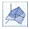
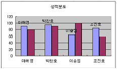
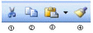
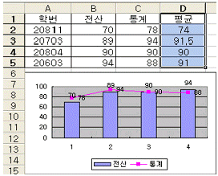
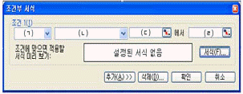
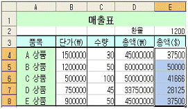

컴퓨터활용능력-3급(폐지) (2009-04-19 기출문제)
1과목: 컴퓨터 일반
1. 다음 중 인터넷에서 숫자로 표시되는 IP주소를 기억하기 쉽게 문자로 변환된 주소를 의미하는 것으로 옳은 것은?
- Domain Name
- Host Name
- IP Name
- Internet Name
(정답률: 87%)

2. 다음 중 바이오스(BIOS)에 관한 설명 중 옳지 않은 것은?
- 하드웨어를 제어하기 위한 기능을 제공한다.
- POST 시스템 초기화, 부팅의 3가지 작업이 수행된다.
- POST란 시스템에 전원이 들어오면 모든 시스템 부분의 정상 여부를 조사하는 것을 말한다.
- 바이오스가 제대로 동작하지 않더라도 PC는 제대로 동작한다.
(정답률: 77%)
3. 한글 Windows XP에서 C드라이브에 저장된 파일을 삭제할 때 [휴지통]에 보관되지 않고 완전히 삭제되는 경우로 옳은 것은?
- 선택된 파일을 [Del]키를 눌러서 삭제한 경우
- 선택된 파일을 [Shift]+[Del]키를 눌러서 삭제한 경우
- 선택된 파일의 바로가기 메뉴에서 [삭제]를 선택하여 삭제한 경우
- 선택된 파일을 마우스로 드래그 앤 드롭하여 [휴지통]으로 넣어 삭제한 경우
(정답률: 87%)
4. 다음 중 Windows XP에서 컴퓨터를 종료하거나 다시 시작하지 않아도 주변 장치를 연결하거나 연결을 끊을 수 있는 직렬연결 방식으로 옳은 것은?
- EIDE
- USB
- SCSI
- LPT
(정답률: 76%)
5. 다음 중 플래시 메모리에 대한 설명으로 옳지 않은 것은?
- 다른 디스크 드라이브 장치들보다 적은 소비 전력을 사용한다.
- 약한 충격에도 쉽게 고장 나므로 데이터의 안정성이 떨어진다.
- 비휘발성 메모리로서 전원이 공급되지 않아도 저장된 내용이 지워지지 않는다.
- MP3 플레이어, 개인용 정보 단말기, 휴대전화, 디지털 카메라 등에 사용되며 플래시 램(Flash RAM) 이라고도 한다.
(정답률: 74%)
6. 다음 중 한글 Windows XP에서 연결 프로그램에 대한 설명으로 옳지 않은 것은?
- 확장자에 대한 연결 프로그램의 설정을 바꾸어 줄 수 있다.
- 모든 파일을 더블클릭한 후에 반드시 해당 프로그램을 연결해야 한다.
- 탐색기에서 표시되는 파일의 아이콘 모양은 설정되어 있는 연결 프로그램에 따라 달라진다.
- 확장자가 다르다 하더라도 같은 연결 프로그램을 사용할 수 있다.
(정답률: 59%)
7. 다음 중 하드디스크의 불량 섹터의 크기를 알 수 있는 명령으로 적당한 것은?
- 디스크 검사, 포맷
- 포맷, 디스크 정리
- 디스크 정리, 디스크 조각 모음
- 디스크 조각 모음, 디스크 검사
(정답률: 62%)
8. 다음 중 운영체제에서 관리하는 가상 메모리가 실제로 위치하는 장치로 옳은 것은?
- 주기억 장치
- 하드디스크 장치
- 캐시 기억장치
- 레지스터 장치
(정답률: 57%)
9. 다음 중 한글 Windows XP에서 인터넷 익스플로러를 시작할 때마다 표시되는 홈페이지를 변경하기 위한 메뉴 선택 방법으로 옳은 것은?
- [보기]-[탐색창]
- [편집]-[홈 페이지]
- [파일]-[보내기]
- [도구]-[인터넷 옵션]
(정답률: 75%)
10. 다음 중 컴퓨터 통신과 관련하여 외부로부터 허가받지 않은 불법적인 접근이나 해커의 공격으로부터 내부의 네트워크를 효과적으로 보호해 주는 역할을 하는 시스템으로 옳은 것은?
- 방화벽(FireWall)
- 라우터(Router)
- 게이트웨이(Gateway)
- 스위치(Switch)
(정답률: 91%)
11. 다음 중 한글 Windows XP에서 실행 중인 프로그램과 프로세스에 대한 정보를 제공받을 수 있는 창으로 옳은 것은?
- [명령 프롬프트] 창
- [시스템 정보] 창
- [시스템 등록정보] 창
- [Windows 작업관리자] 창
(정답률: 65%)
12. 다음 중 컴퓨터의 기억장치와 관련하여 접근 속도(Access Time)가 가장 빠른 장치로 옳은 것은?
- DRAM
- Cache Memory
- Hard Disk
- USB
(정답률: 75%)
13. 인터넷 익스플로러(Internet Explorer)의 메뉴 중 인터넷 옵션의 일반 메뉴에서 설정할 수 없는 것은?
- 홈페이지로 사용할 주소 변경
- 임시 인터넷 파일에 있는 열어본 페이지의 삭제
- 즐겨찾기 목록 추가
- 웹페이지의 글꼴 변경
(정답률: 54%)
14. 다음 중 인터넷에서 제공되는 서비스로 옳지 않은 것은?
- FTP
- TELNET
- USB
- WWW
(정답률: 80%)
15. 다음 중 한글 Windows XP에서 바탕화면 위에 활성화된 창만을 화면 캡처하여 클립보드에 저장하려고 할 때 사용하는 바로가기 키로 옳은 것은?
- <Print Screen>
- <Alt>+<Print Screen>
- <Shift>+<Print Screen>
- <Ctrl>+<Print Screen>
(정답률: 77%)
16. 다음 중 한글 Windows XP에서 시스템을 종료하기 위한[시스템 종료] 창에서 선택할 수 있는 항목으로 옳지 않은 것은?
- 끄기
- 취소
- 확인
- 다시 시작
(정답률: 83%)
17. 한글 Windows XP의 [보조프로그램] 중에서 다른 컴퓨터에 접속하여 해당 컴퓨터의 응용 프로그램을 사용할 수 있도록 해주는 기능으로 옳은 것은?
- 보안센터
- 원격 데스크톱 연결
- 동기화
- 프로그램 호환성 마법사
(정답률: 77%)
18. 다음 중 컴퓨터에서 전 세계 모든 문자를 표현하고 다룰 수 있도록 설계된 산업 표준의 16비트 완성형 코드로 옳은 것은?
- BCD-Code
- ASCII-Code
- Hamming-Code
- Uni-Code
(정답률: 75%)
19. 다음 중 폴더 내에 있는 이미지 파일의 내용을 빠르게 식별 할 수 있도록 하는 보기 방식으로 옳은 것은?
- 그룹별로 표시
- 슬라이드보기
- 미리보기
- 아이콘보기
(정답률: 69%)
20. 다음 중 한글 Windows XP의 [검색 결과] 창에서 test.txt라는 이름의 파일을 찾고자 할 경우에 파일명의 검색 조건으로 옳지 않은 것은?
- tes?.txt
- tes?.?
- tes*.*
- tes*.txt
(정답률: 70%)
2과목: 스프레드시트 일반
21. 다음 중 [셀 서식]-[맞춤] 옵션에서 지정할 수 있는 텍스트 표시 방향의 범위가 올바르게 표시된 것은?
- -90도에서 90도
- -180도에서 180도
- -360도에서 360도
- 0도에서 180도
(정답률: 72%)
22. 다음 중 묶은 세로 막대형 차트와 혼합하여 사용할 수 있는 차트는?

표면형 차트- 거품형 차트
- 도넛형 차트
- 주식형 차트
(정답률: 56%)
23. 고과 점수가 높은 직원에서 고과 점수가 낮은 순으로 정렬하고, 연차가 높은 직원에서 연차가 낮은 직원 순으로 정렬하고, 고과 점수와 연차가 같은 경우에는 직급이 높은 직원에서 직급이 낮은 직원 순으로 정렬하고 싶다. 직급은 숫자가 작을수록 높은 직급이다. 다음 중 정렬 기준과 정렬 방식이 옳게 연결된 것은?
- 고과 점수-오름차순, 연차-내림차순, 직급-내림차순
- 고가 점수-내림차순, 연차-내림차순, 직급-내림차순
- 고과 점수-오름차순, 연차-내림차순, 직급-오름차순
- 고과 점수-내림차순, 연차-내림차순, 직급-오름차순
(정답률: 71%)
24. 다음 중 [페이지 설정]에서 ‘머리글/바닥글’ 설정에 사용되는 단추에 대한 설명으로 옳지 않은 것은?
- 전체 페이지 번호를 삽입한다.
- 통합 문서의 파일 이름을 삽입한다.
- 현재 워크 시트의 이름을 삽입한다.
- 현재 년도의 달력을 삽입한다.
(정답률: 60%)
25. 아래에 작성된 차트에 설정되어 있는 항목으로 옳은 것은?

- 범례
- 데이터 레이블
- 데이터 테이블
- 값 축 제목
(정답률: 65%)
26. 아래의 도구 모음에 대한 설명으로 옳지 않은 것은?

- 잘라내기
- 복사
- 붙여넣기
- 색 채우기
(정답률: 76%)
27. 차트에서 [D1:D5] 영역을 선택하고 <Ctrl>+<C>키를 누른 다음, 차트영역을 선택하고 <Ctrl>+<V>키를 눌렀을 때 나타나는 실행결과로 옳은 것은?

- 해당 범위의 데이터에 대한 범례는 추가되지 않는다.
- 모든 데이터 계열이 세로 막대형 차트로 변경된다.
- 범위로 지정된 평균이 데이터 계열에 추가된다.
- 평균만 표시되는 그래프로 변경된다.
(정답률: 68%)
28. 데이터 계열별 이름과 무늬 및 색상을 표시하여 구분해 주는 차트의 구성 요소는?
- 차트 영역
- 범례
- 그림 영역
- 데이터 요소
(정답률: 65%)
29. 엑셀의 워크시트와 통합 문서의 관계를 설명한 것으로 옳지 않은 것은?
- 워크시트는 데이터를 나열하고 분석하는데 사용한다.
- 통합 문서는 여러 개의 시트를 가질 수 있다.
- 일반적으로 엑셀에서 파일로 저장하고, 호출하는 기본 단위는 워크시트 단위로 한다.
- 여러 워크시트에 데이터를 동시에 입력하거나 편집할 수 있으며 여러 워크시트의 데이터를 이용하여 계산할 수도 있다.
(정답률: 51%)
30. 다음 중 ‘선택하여 붙여넣기’ 기능에 대한 설명 중 옳지 않은 것은?
- 원래 데이터는 삭제하면서 붙여넣기 할 수 있다.
- 복사한 값을 덧셈하여 붙여넣기 할 수 있다.
- 복사할 셀 수식의 결과 값만 붙여넣기 할 수 있다.
- 복사한 셀의 서식만 붙여넣기 할 수 있다.
(정답률: 56%)
31. 다음 그림은 조건부 서식을 지정하는 화면이다. 셀에 입력된 값이 10보다 작거나, 20보다 클 때로 조건을 지정하려고 할 때, 각(ㄱ)~(ㄹ)이 맞게 짝지어 진 것은 어느 것인가?

- (ㄱ) 셀 값이 (ㄴ) 다음의 값의 사이에 있음 (ㄷ) 10 (ㄹ) 20
- (ㄱ) 셀 값이 (ㄴ) 다음 값의 사이에 있지 않음 (ㄷ) 10 (ㄹ) 20
- (ㄱ) 수식이 (ㄴ) 다음 값과 같음 (ㄷ) 9 (ㄹ) 21
- (ㄱ) 수식이 (ㄴ) 다음 값과 같지 않음 (ㄷ) 9 (ㄹ) 21
(정답률: 65%)
32. 워크시트에서 마우스 오른쪽 버튼을 눌러 삽입을 선택하였다. 다음 중 삽입의 옵션으로 옳지 않은 것은?
- 셀을 아래로 밀기
- 행 전체
- 열 전체
- 셀을 왼쪽으로 밀기
(정답률: 62%)
33. 워크시트에서 마우스 오른쪽 버튼을 눌러 삽입을 선택하였다. 다음 중 삽입의 옵션으로 옳지 않은 것은?
- 용지의 크기
- 축소/확대 배율
- 글꼴의 크기 조정
- 인쇄 영역 지정
(정답률: 42%)
34. 다음 중 틀을 고정하거나 취소하는 작업에 대한 설명으로 옳은 것은?
- 행 번호 3을 누른 후 [틀 고정]을 실행시키면 3행까지 고정된다.
- [D4] 셀에서 [틀 고정]을 실행시키면 [D4] 셀의 왼쪽에 있는 셀들과 위쪽에 있는 셀들이 고정된다.
- <Ctrl> 키를 이용하여 2개 이상의 행 번호를 누른 후 [틀 고정]을 실행시키면 처음 누른 행이 고정의 기준이 된다.
- 워크시트 전체를 범위로 선택한 뒤 [틀 고정 취소]를 실행하면 열 문자의 틀 고정만 해제된다.
(정답률: 51%)
35. 다음 중 차트의 축 서식 설정에 관한 설명으로 옳지 않은 것은?
- 축 눈금의 최대값, 최소값을 사용자가 정의할 수 있으며, 주 단위는 항상 같다.
- 축 선의 색을 설정할 수 있다.
- 맞춤에서 텍스트가 표시되는 각도를 사용자가 설정할 수 있다.
- 표시 형식에서 사용자 지정 서식을 이용하여 다양하게 설정할 수 있다.
(정답률: 60%)
36. “2009-4-19”를 입력한 경우 지정된 표시형식에 따른 결과가 옳지 않은 것은?
- 표시형식 : yy-mmm-dd
결과 : 09-Apr-19 - 표시형식 : yy-mmmm-ddd
결과 : 09-Apri-Sun - 표시형식 : yyyy-mm-dddd
결과 : 2009-04-Sunday - 표시형식 : yyyy-mm-dd
결과 : 2009-04-19
(정답률: 62%)
37. [C2] 셀의 총점이 140점 이상이면 우수, 120점 이상이면 보통, 119점 이하이면 낙제로 나타내고자 할 때의 수식으로 옳지 않은 것은?
- =IF(C2<120,"낙제",IF(C2>140,"우수”,“보통”))
- =IF(C2>=140,"우수",IF(C2>=120,"보통”,“낙제”))
- =IF(C2<120,"낙제",IF(C2>=140,"우수”,“보통”))
- =IF(C2<120,"낙제",IF(C2<140,"보통”,“우수”))
(정답률: 48%)
38. 다음과 같이 총액($)을 구하기 위하여 [E4] 셀에는 수식을 입력한 후 [E5] 셀까지는 채우기 핸들을 이용하려고 한다. [E4] 셀에 입력될 수식으로 옳은 것은? (단, 총액($) = 총액()/환율)

- =INT(D4/$E$2)
- =INT(D4/E2)
- =INT(D4/E$2)
- =INT(D4/$E2)
(정답률: 64%)
39. 채우기 핸들을 이용하여 셀을 삽입하고자 할 때 어떤 키를 이용하는가?
- <Alt>
- <Shift>
- <Ctrl>
- <Insert>
(정답률: 49%)
40. [A1] 셀에 ‘1’이 입력된 상태에서 [A5] 셀까지 연속데이터 (1, 2, 3, 4, 5)를 표시하고자 할 때 옳은 방법은?
- [A1] 셀을 선택한 뒤, 채우기 핸들로 [A5] 셀까지 드래그 한다.
- [A1:A2] 셀까지 범위를 설정한 뒤, 채우기 핸들로 [A5]셀까지 드래그 한다.
- [A1] 셀을 선택한 뒤, <Ctrl> 키를 누른 채 채우기 핸들로 [A5] 셀까지 드래그 한다.
- [A1] 셀을 선택한 뒤, <Shift>키를 누른 채 채우기 핸들로 [A5] 셀까지 드래그 한다.
(정답률: 61%)
IP주소는 숫자로 표시되기 때문에 기억하기 어렵습니다. 따라서 인터넷에서는 IP주소를 기억하기 쉽게 문자로 변환된 주소를 사용합니다. 이러한 주소를 "Domain Name"이라고 합니다. 예를 들어, 구글의 IP주소는 172.217.25.110이지만, 구글의 도메인 네임은 www.google.com입니다. 이렇게 도메인 네임을 사용하면 사용자는 기억하기 쉽고 편리하게 웹사이트에 접속할 수 있습니다.